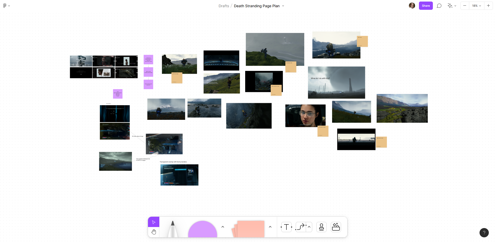
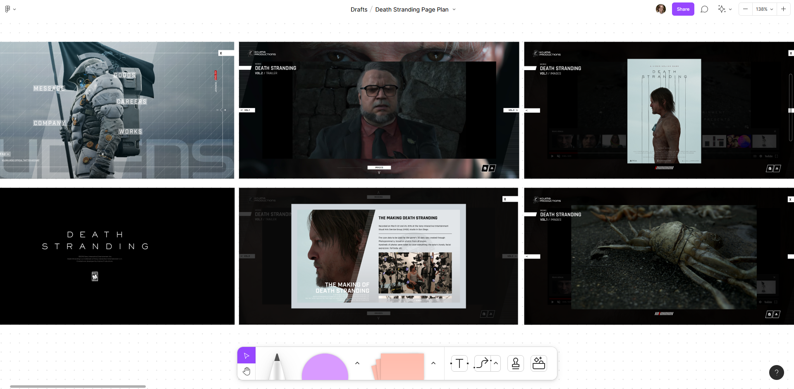
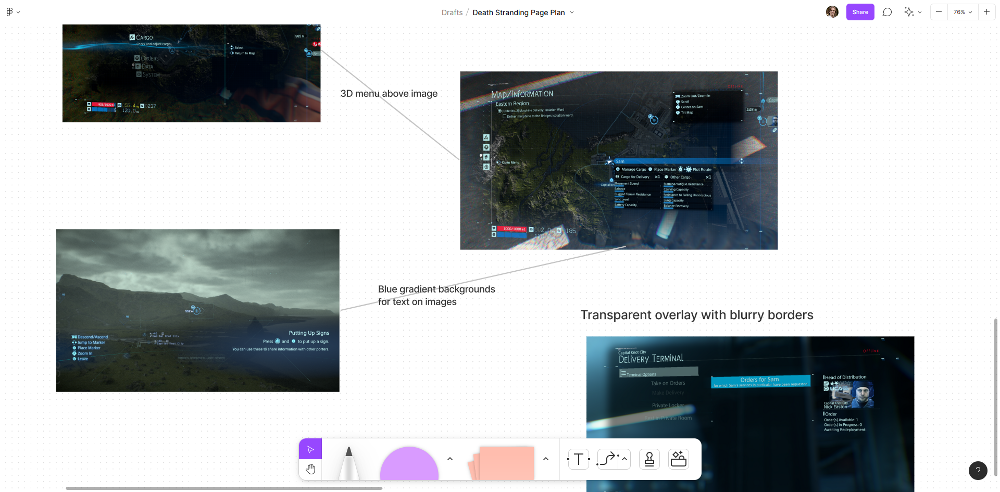
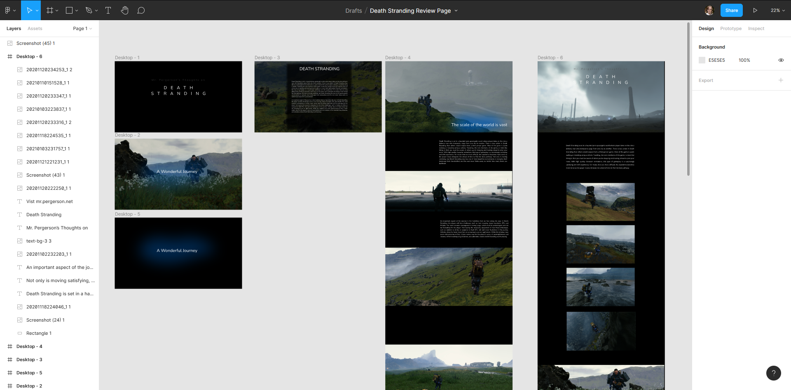
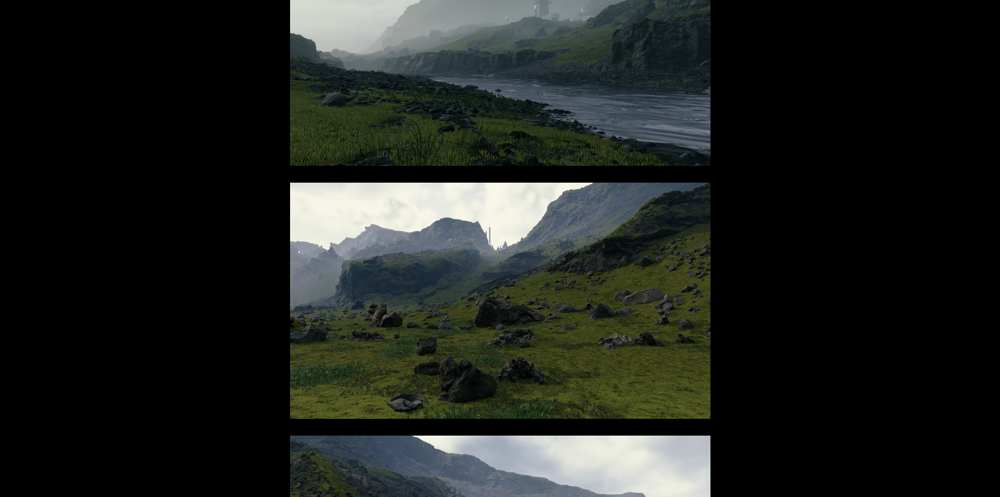

My thoughts on the video game Death Stranding. All images are taken by me using the in-game photo mode.
See the ProjectLearning G.S.A.P.
-
GSAP is a free JS library for animating HTML elements.
-
Before coding, I first planned the layout, colors, and animations of the site.
-
I used GSAP's written and video documentation to understand how to use the library to achieve my desired vision.
-
I finished the website with a scrolling hero animation and multiple image fade-in effects.
Planning
I started in Figma by brainstorming the layout, featured images, and colors.
  Figma layout
Once I had a direction, I experimented with different layouts and styles before I committed to the final one.
Scrolling Introduction
When the viewer begins to scroll down, a background image will fade-in before scrolling down to the article.
The solution for this wasn't so obvious so I had to browse around CodePen for an example of how this might be down. What I ended up doing
was creating a scrollElement div that had a hight of 2000px and set the background position to sticky. When the viewer scrolled down, the background would
appear to be static until the end of the scrollElement was reached.
Here is my CSS and Javascript code for this effect.
.intro {
position: sticky;
top: 0;
height: 100vh;
text-align: center;
background-image: url("img/Screenshot_24.png");
}
.scrollElement {
height: 2000px;
z-index: 0;
}
gsap.from('.intro-text', {opacity: 0, duration: 2, ease: "power1.out"});
gsap.from(".title", {letterSpacing: ".9em", duration: 2.5, ease: "power1.out"});
gsap.to(".bg-overlay", {
scrollTrigger: {
trigger: ".scrollElement",
start: "20px top",
end: "bottom bottom",
scrub: 1,
},
opacity: 0, duration: 5, ease: "power1.out"
});
Image fade-in effects

For the images, I wanted them to fade-in as the viewer scrolled down. I needed a solution that would target all img tags without animating them
all at once. I found through looking at the GSAP documentation that I could get all the images in an array and assign each one a unique
scroll trigger.
Here is the Javascript code for that.
const images = gsap.utils.toArray('img');
images.forEach(image => {
gsap.to(image, {
scrollTrigger: {
trigger: image,
start: "0 70%"
},
opacity: 1, duration: 2, ease: "power3.out"
});
})